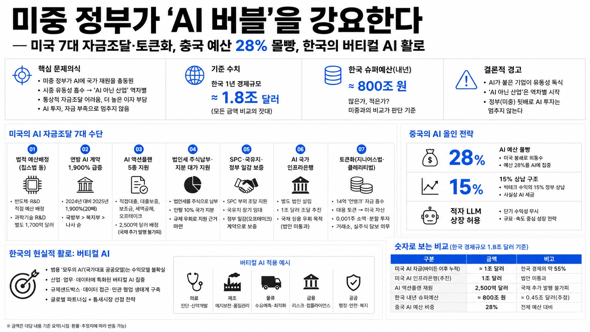

미중 정부가 'AI 버블'을 강요한다 — 미국 7대 자금조달·토큰화, 중국 예산 28% 몰빵, 한국의 버티컬 AI 활로

01핵심 개요
항목
내용
형식
손에잡히는경제 이진호 진행자와 박정호 명지대 특임교수의 대담 — "미국·중국 정부가 AI에 국가 재원을 총동원하며 사실상 버블을 강요하고 있다"는 문제의식으로 양국의 자금조달 수단을 하나씩 해부하고 한국의 대응을 진단
화자
박정호(명지대 특임교수, 산업·기업 분석), 진행자 이진호(손에잡히는경제)
핵심 문제의식
미국·중국이 AI에 예산과 비전통적 금융수단을 쏟아부어 시중 유동성을 빨아들이며, 그 결과 'AI가 붙지 않은' 산업은 통상적 자금 조달조차 어려워지고 더 높은 이자를 감내하는 '역차별'이 시작된다. 한국의 내년 슈퍼예산(800조원 육박)은 이 경쟁에서 많은가 적은가를 각자 판단해 보자는 화두
기준 수치
한국 1년 경제규모 ≈ 1.8조 달러 — 대담의 모든 금액을 이 잣대로 비교한다
핵심 내용
(1) 미국은 칩스법 등 직접 예산배정 + 별도 과학기술 R&D 1,700억 달러, (2) 연방정부 AI 계약이 2024년 대비 2025년 1,900%(20배) 급증(국방부·복지부·나사順), (3) 트럼프 'AI 액션플랜'이 데이터센터에 직접대출·대출보증·보조금·세액공제·오프테이크 5종 지원(2,500억 달러 배정), (4) 법인세를 주식으로 납부·지분 대가 지원(인텔 10% 국가 지분), (5) SPC와 국유지·정부 일감으로 부외(簿外) 자금조달 사실상 국가 보증, (6) AI 국가 인프라은행으로 1조 달러 조달 추진, (7) 토큰화(지니어스법·클레리티법)로 14억 '언뱅크' 자금까지 미국 자산으로 흡수, (8) 중국은 미국 봉쇄로 외통수→예산 28% 몰빵·적자 LLM 상장 허용, (9) 한국의 현실적 활로는 '버티컬 AI'이며 수익모델 없는 '모두의 AI'(국가대표 공공모델)는 재고 필요
02핵심 기능/내용 구조
문제 제기 — 내년 800조 슈퍼예산, 그리고 'AI 역차별'의 경고: 박 교수는 내년 한국 정부 예산이 통상 600조원대를 훌쩍 넘어 올해 700조원을 돌파했고 내년엔 800조원을 넘어설 가능성이 높은 '슈퍼예산'이 될 것으로 짐작한다. 이것이 많은지 적은지는 같은 시기 천문학적 재정을 AI에 쏟는 미국·중국과 견줘야 판단할 수 있다는 것이다. 결론적 경고는 두 가지다. 첫째, 표면적으론 빅테크가 '자기 돈'으로 데이터센터를 짓는 듯 보였지만 실은 정부 자금이 뒤를 받치고 있다. 둘째, AI가 붙은 기업이 시중 유동성을 다 빨아들이면 'AI 아닌 산업'은 통상적 자금 조달조차 어려워지고 더 높은 이자를 감내해야 하는 '역차별'이 시작된다. 반대로 정부(미국·중국)가 뒷배라 "AI 투자는 자금 부족으로 멈추지 않는다"는 안도감을 갖는 시각도 공존한다. (0:00)
미국 방법①② — 법적 예산배정(칩스법)과 연방 AI 계약 1,900% 급증: 미국이 AI 재원을 마련한 방법론을 정리하면 약 7가지다. ①바이든 행정부의 칩스법 등 법을 만들어 반도체 제조·연구개발·세액공제에 직접 예산을 배정하고, 반도체 전후방 과학기술 연구 전반에 별도로 1,700억 달러를 신규 배정했다. ②각 부처가 배정받은 기존 예산을 'AI 관련 계약'으로 전용하는 방식이다. 국방부는 레이더·감시체계·무인 전술 시스템을 AI 기반으로 바꾸는 납품 계약을 발주해 민간에 자금을 흘려보낸다. 그 결과 연방정부의 AI 관련 계약 금액은 2024년 대비 2025년 1,900%(20배) 폭증했고, 비중 1위 국방부, 2위 보건복지부, 3위 나사(NASA) 순이다. 60~70년대 한국식 '정부가 일감으로 산업을 키우는' 방식의 재현이다. (5:15, 8:12)
미국 방법③ — 트럼프 'AI 액션플랜'의 데이터센터 5종 지원("누구 돈으로 짓는 거야?"): 2025년 7월 트럼프가 발표한 아메리칸 AI 액션플랜은 자본지출 5억 달러 이상이거나 전력수요 100MW 이상인 데이터센터에 연방정부가 (a)직접 대출, (b)대출 보증, (c)보조금(안 갚아도 되는 돈), (d)세액공제(쓴 돈을 돌려줌), (e)오프테이크 계약(정부가 수요자로 장기계약 체결)을 한꺼번에 지원하도록 했다. 하나만 있어도 파격인데 전부 몰아준 셈이라 "데이터센터를 도대체 누구 돈으로 짓는 거냐"는 말이 나온다. 다만 재원 2,500억 달러는 실제로 마련돼 있지 않아 국채 추가 발행이 불가피하고, 이것이 미국 10년물 국채 금리 상승과 맞물린다. 삼성전자·SK하이닉스 주가가 오르기 직전 시점과 겹친다는 관찰도 곁들여진다. (10:53, 13:07)
미국 방법④⑤⑥ — 법인세 주식납부·지분 대가 지원(인텔 10%)·공공펀드 신설: ④올해부터 기업이 법인세를 현금이 아닌 자사주(주식)로 납부할 수 있게 해, 사실상 정부가 국부펀드처럼 지분을 축적한다(현금을 AI 투자에 남기게 하는 효과). ⑤R&D 지원 자격(재무건전성·연구역량·인력)에 미달하는 반도체·AI 스타트업은 원래 지원하면 위법이지만, '지분을 대가로 받고' 지원하면 규제를 우회할 수 있다. 그 첫 사례가 인텔로, 정부가 지분 10%를 가져갔다. ⑥한국의 국민성장펀드처럼 공공펀드도 신설한다. 이 정도만 누적해도 바이든 이후 지금까지 1조 달러에 육박하는 금액이 AI로 흘러가는데, 이는 한국 경제 전체 규모(1.8조 달러)의 절반에 해당한다. (15:24)
미국 방법⑦ — SPC와 국유지·정부 일감으로 부외 자금조달을 국가가 보증: 메타 등 빅테크는 특수목적법인(SPC)을 세워 데이터센터 자금을 빌린다. 법인격이 분리돼 있어 본사 재무제표에 부채가 잡히지 않고 신용등급 하락(=조달비용 상승)을 피하는 '잔머리'다. 문제는 이 페이퍼컴퍼니가 자금을 조달할 때 부지로 '국유지'를 장기 무상·저가 임대로 쓸 수 있게 해주고, 데이터센터의 수익모델로 '정부 일감(오프테이크)' 계약서를 들고 오게 함으로써 정부가 사실상 SPC에 사인을 해준다는 점이다. 결국 부외 자금조달마저 정부와 함께하는 셈으로, 70~80년대 "정부와 기업이 한 편"이던 한국·중국식 관치금융과 닮았다. (18:08, 20:37)
미국만의 방법⑧ — AI 국가 인프라은행으로 1조 달러 조달(국채 신용 우회): 미국 의회에는 'AI 국가 인프라은행' 설립 법안이 반복 제출되고 있다(한국 산업은행·수출입은행 모델). 국가가 직접 지원하지 않고 별도 법인을 세우는 이유는, 미국채를 더 발행할수록 금리가 오르고 이미 강등된 국가 신용등급이 더 떨어지면 그 나라 기업들의 신용등급·조달비용까지 악순환에 빠지기 때문이다. 그래서 '국가와 무관한' 별도 법인이 채권을 발행해 1조 달러 규모의 대차대조표를 꾸려 전력·용수·데이터센터 등 AI 인프라에 투자하겠다는 구상이다. 한국 경제규모(1.8조 달러)와 견주면 상상을 초월하는 조달 규모다. 아직 법안은 통과되지 않았다. (22:55, 25:22)
미국만의 방법⑨ — 토큰화(지니어스법·클레리티법)로 14억 '언뱅크' 자금까지 흡수: '코 묻은 돈'까지 긁는 방법이 토큰화다. 전 세계에 은행계좌가 없는 '언뱅크' 인구가 14억 명(경제활동 가능 인구 3명 중 1명)인데, 이들은 통장은 없어도 휴대폰으로 디지털 자산 거래소에 접근할 수 있고 이 14억 명의 70%가 스테이블코인 '테더'를 보유한다. 여기에 빅테크·한국 반도체주를 추종하는 대용 토큰(예: 하이닉스 코인)을 상장하면 제3세계 자금이 미국 주식·채권으로 흘러든다. 지니어스법·클레리티법은 이 경로의 펀더멘털을 만드는 법으로, 거래소가 요청받은 주식을 실제로 사서 담보(ADR과 유사)하도록 의무화하고, 0.001주 단위 소액·분할 투자를 가능케 한다. 어느 날 디지털 자산 거래소의 대용 토큰 거래액(4조원)이 같은 날 코스피 본주 거래액(7조원)의 약 70%에 달하기도 했다. 남은 쟁점은 '토큰화 주식이 증권이냐 상품이냐'의 분류(세금·회계 처리)로, 클레리티법이 이를 정한다. (27:56, 30:36, 33:16)
중국 — 미국 봉쇄로 '외통수', 예산 28% 몰빵과 15% 상납: 미국은 자국 기업이 중국 AI에 투자하거나 중국과 거래하면 미국과 거래를 못 하게 '락(lock)'을 걸어 중국의 해외 자금조달 경로를 대부분 차단했다. 또 엔비디아·AMD가 중국에서 올린 매출의 15%, 로봇 부품(액추에이터·모터 등) 협력에서 생긴 밸류의 일부를 미국 정부에 상납하도록 경로를 만들어, 중국이 번 돈마저 옥죄고 그 상납금을 다시 미국 AI에 투입한다. 외통수에 몰린 중국의 유일한 선택지는 '내부 조달'로, 중앙·지방정부 예산을 직·간접 합산하면 국가 전체 예산의 약 28%가 AI로 투영된 '몰빵'이 나타난다. (38:31, 41:34)
중국 — 상장 규제 완화(STAR마켓 5억 달러 기준)로 적자 LLM까지 상장: 중국은 미국을 흉내 내 상장 규정을 갈아엎었다. 원래 수년 흑자 등 심사가 필요했지만, 2026년 6월 상하이거래소 과학혁신판(STAR마켓)의 다섯 번째 상장 기준을 개정해 아직 이익을 못 내는 LLM 기업도 상장할 수 있게 했다. 기준은 예상 시가총액 40억 위안(약 5억 달러) 이상 + 최소 1개 이상의 LLM 제품을 실제 운용 중이면 가능하며, 대상은 LLM·로봇·6G·뇌컴퓨터 인터페이스·양자 등 전부 AI 기반이다(한국의 기술특례상장과 유사). 실제로 유니트리가 상장 첫날 주가가 6배 뛰었고, 키미(Kimi)로 유명한 문샷 AI도 6개월 내 홍콩 상장을 추진 중이다. (44:15)
한국의 활로 — '버티컬 AI'가 필수, 수익모델 없는 '모두의 AI'는 재고: 미국·중국은 경제 체제가 다른데도 '정부 지원→시장 조달(상장·채권) 허들 완화'라는 거의 같은 길을 간다. 반면 한국은 국가대표 AI를 뽑아 지원하는 '모두의 AI'로 방향이 남다른데, 박 교수는 이를 우려한다. 미국·중국 정부는 개별 사기업을 '경쟁시켜' 이긴 기업이 큰돈을 벌게 하지만, 한국식 국가대표 공공모델은 성과물이 누구 것인지 모호하고 커머셜하게 운영할 수도 없어 기업이 헌신할 유인이 없다(네이버도 '모두의 AI'에서 이탈). 대안은 '버티컬(수직) AI'로, 한국이 가진 제조 데이터를 살려 조선·반도체 등 특정 영역에 특화한 AI와, 일상 질문에 매달 구독료를 낼 필요 없는 소소한 생활형 AI를 직접 갖추는 것이다. 이는 선택이 아니라 필수이며, 나아가 삼성·하이닉스가 버는 돈을 배당·주주환원으로만 돌릴지 재투자할지에 대한 고민으로 이어진다. (46:53, 49:18, 51:33)
03기술적 맥락
이 대담의 축은 'AI 자금조달의 금융공학'이다. 핵심은 국가 재정이 직접 지출(칩스법·과학기술 R&D 1,700억 달러)에서 시작해, 부외(簿外)·우회 구조로 확장된다는 점이다. ①SPC(특수목적법인)는 데이터센터 부채를 본사 재무제표에서 떼어내 신용등급 하락과 조달비용 상승을 피하는 장치이고, ②'AI 국가 인프라은행'은 국채가 아닌 별도 법인 채권으로 1조 달러를 조달해 국가 신용등급 악순환(국가↓→기업↓→조달비용↑)을 우회하는 장치다. ③토큰화는 가장 진보한 층위로, 스테이블코인(테더)과 디지털 자산 거래소를 파이프라인 삼아 기존 스위프트(SWIFT)망 밖의 14억 '언뱅크' 자금을 미국 주식·채권으로 끌어온다. 이때 대용 토큰이 실제 주식을 담보(ADR형)하도록 지니어스법이 의무화하고, '증권 vs 상품(코모디티)'이라는 법적 분류를 클레리티법이 정리해 세금·회계·규제의 토대를 놓는다. 코인은 상품으로 분류돼 있지만 그 시세가 증권(주가)을 추종하면 증권성이 생기는 회색지대가 쟁점이다. 요컨대 반도체·데이터센터라는 '하드웨어 수요'가, 직접예산→지분참여→부외조달→인프라은행→토큰화로 이어지는 '금융 레이어'로 뒷받침되면서, 시중 유동성이 AI로 집중되는 구조가 완성된다.
04전략적 의미
첫째, 미국·중국의 총력전은 개별 기업의 사업이 아니라 'AI 패권'을 건 국가 프로젝트이므로, 정부가 이 프로젝트를 쉽게 망하게 두지 않는다는 점이 투자자에게 안도(하방 방어)와 불안(버블 강요)을 동시에 준다. 둘째, 그 이면의 실질 리스크는 '역차별'이다. AI가 시중 유동성을 흡수하면 비(非)AI 기업은 통상적 조달조차 어려워지고 고금리를 감내해야 하며, 미국 국채 금리 상승도 이 자금 수요와 맥을 같이한다. 셋째, 자본 조달의 무대가 국가 예산에서 '자본시장·디지털 자산'으로 넓어지면서, 상장 허들 완화(중국 STAR마켓·한국 기술특례상장)와 토큰화가 새로운 자금 파이프라인이 된다 — 적자 기업·스타트업도 시총만으로 상장하는 시대다. 넷째, 한국의 전략적 선택은 '금광이냐 곡괭이냐'로 요약된다. 파운데이션 모델을 미·중과 정면으로 겨루기보다, 제조 데이터를 무기로 한 '버티컬 AI'(조선·반도체 등)와 생활형 저비용 AI로 종속(구독료 유출)을 방어하는 것이 현실적이며, 이는 선택이 아닌 필수라는 것이 결론이다. 다만 수익모델이 불분명한 '국가대표 공공 AI'는 기업 유인을 만들지 못해 재설계가 필요하다.
05핵심 워크플로우 또는 비교표
#
미국의 AI 자금조달 수단
성격
관련 수치·사례
①
칩스법 등 직접 예산배정 + 과학기술 R&D
재정 직접지출
R&D 1,700억 달러 신규 배정
②
부처 기존 예산의 AI 계약 전용
발주(관수)
연방 AI 계약 2025년 +1,900%(국방·복지·나사)
③
트럼프 AI 액션플랜 데이터센터 지원
대출·보증·보조·세제·오프테이크
2,500억 달러 배정(재원 미확보→국채)
④
법인세 주식 납부
지분 축적(국부펀드형)
2026년부터 시행
⑤
지분 대가 지원(규제 우회)
정부 지분참여
인텔 지분 10%
⑥
공공펀드 신설
정책펀드
(한국 국민성장펀드형)
⑦
SPC·국유지·정부 일감
부외 자금조달 보증
페이퍼컴퍼니에 국가 사인
⑧
AI 국가 인프라은행
별도법인 채권(국채 우회)
1조 달러 조달 목표(법안 계류)
⑨
토큰화(지니어스·클레리티법)
디지털자산 파이프라인
언뱅크 14억·테더 보유 70%
구분
미국
중국
한국
기조
직접지원→자본시장·토큰화로 확장
미국 봉쇄로 외통수→내부 조달
슈퍼예산(800조 육박)이나 방향 애매
재정 규모
누적 1조 달러 육박(경제의 1/2)
국가 예산의 약 28%를 AI로 몰빵
미·중 대비 재원 확보처 불명확
자본시장
상장·채권·토큰화 전방위 완화
STAR마켓 적자 LLM 상장 허용
기술특례상장 등 기존 제도
대표 사례
인텔 10%·데이터센터 5종 지원
유니트리 첫날 6배·문샷 홍콩상장
'모두의 AI'서 네이버 이탈
전략 방향
AI 패권 국가 프로젝트
예산·상장으로 자력 육성
버티컬 AI(제조 특화)로 종속 방어
06활용 시나리오
주식·매크로 투자자: 미국 국채 금리 상승과 삼성전자·SK하이닉스 주가를 '데이터센터 국가지원(2,500억 달러 배정·재원 미확보→국채 발행)'이라는 자금 흐름의 함수로 읽는다. AI 관련주의 하방은 '정부가 프로젝트를 망하게 두지 않는다'는 정책 지지로, 상방 리스크는 '역차별로 비AI·전통 산업의 조달난'으로 구분해 포트폴리오를 배분한다.
디지털 자산·핀테크 전략가: 지니어스법·클레리티법이 여는 '토큰화 주식·채권' 파이프라인(테더 기반 14억 언뱅크 수요, 실물 담보 의무화, 0.001주 분할)을 신규 자금유입 채널로 평가하고, '증권이냐 상품이냐' 분류에 따른 세제·규제 시나리오를 사업 설계에 반영한다.
정책·산업 전략 담당자: 미국의 지분 대가 지원(인텔 10%)·법인세 주식납부·인프라은행 등 '국가가 지분·부외 구조로 산업을 키우는' 수단을 벤치마킹하되, 한국형 관치금융의 과거 경험과 대비해 재정 건전성·국가 신용등급 파급을 함께 검토한다.
한국 AI·제조 기업 의사결정자: '모두의 AI'(공공 국가대표 모델)의 수익모델·소유권 모호성 리스크를 근거로, 조선·반도체 등 자사 제조 데이터를 활용한 '버티컬 AI'와 저비용 생활형 AI로 자원을 집중하고, 삼성·하이닉스식 배당·주주환원과 AI 재투자의 균형을 재점검한다.
07현황 및 전망
미국·중국은 경제 체제가 다른데도 'AI 자금 총력전'에서 거의 같은 길을 걷는다 — 정부 지원으로 밀어주고, 부족하면 상장·채권·토큰화 등 자본조달 허들을 낮춘다. 미국은 바이든 이후 누적 1조 달러에 육박하는 재원을 직접예산·데이터센터 5종 지원·지분참여·SPC·인프라은행·토큰화로 동원하며, 재원이 실제로는 부족해 국채 추가 발행과 금리 상승 압력을 키운다. 중국은 미국의 봉쇄와 15% 상납 구조에 외통수로 몰려 국가 예산의 약 28%를 AI에 몰빵하고, STAR마켓 상장 기준을 5억 달러 시총·LLM 1개 운용으로 대폭 낮춰 적자 기업·스타트업(유니트리·문샷 등)의 상장 러시를 열었다. 이 과정에서 시중 유동성이 AI로 집중돼 비AI 산업의 자금난·고금리라는 '역차별'이 구조화될 위험이 크다. 한국은 800조원 슈퍼예산에도 재원 확보처가 불명확하고, 파운데이션 모델 정면승부와 '모두의 AI' 공공모델 사이에서 포지션이 애매하다. 박 교수의 전망은 명확하다 — 한국의 현실적 승부처는 제조 데이터를 무기로 한 '버티컬 AI'와 저비용 생활형 AI이며, 이는 종속(구독료 유출)을 막기 위한 필수 과제다. 다만 수익모델 없는 국가대표 공공 AI는 기업 유인을 만들지 못해 재설계가 불가피하다.